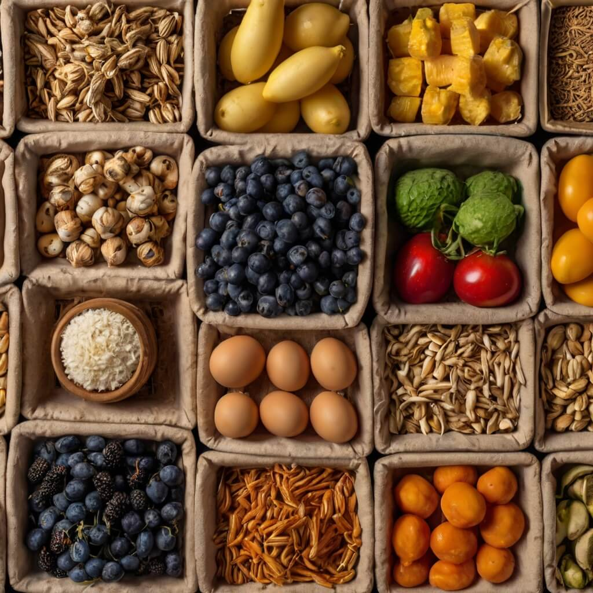
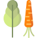

Our Farm’s Journey
We Care About Your Health and the Environment
Eco-Friendly Products
Supporting Local Farmers
Transparency and Trust
Our Mission and Values
Tailored Farm Baskets
Farm-to-Table Lifestyle
Time-Honored Practices with Modern Care
Always Evolving
Explore Our Offerings
Nature’s Bounty, Handpicked for You

Expertly Grown & Harvested
Farm-Fresh Tips & Recipes
Farm-Fresh, Wherever You Are
RusticRoots Community Hub
Inside RusticRoots Hub
Your trusted source for fresh, locally grown produce, empowering you to embrace a healthier lifestyle and support sustainable farming.
From home cooks to professional chefs, we provide farm-fresh ingredients that elevate every meal. Whether you're crafting a family dinner, a gourmet feast, or a quick snack, RusticRoots delivers unmatched quality and taste.
At RusticRoots, we believe great food starts with great ingredients. Join us in celebrating farm-to-table goodness, one harvest at a time.
Be part of a growing movement that values fresh food, hardworking farmers, and a deep connection to nature. Our produce nurtures both body and soul, strengthening communities through wholesome nourishment.
Stay Ahead with Seasonal Harvests
Welcome to RusticRoots, where every bite tells a story of dedication, care, and natural goodness. We follow the rhythms of nature, bringing you the freshest seasonal produce straight from the farm.
No matter your needs, RusticRoots has you covered. From vibrant fruits to nutrient-rich greens, we handpick each item to ensure peak freshness and flavor. Our farmers put passion into every harvest, so you get the best in every bite.
Elevate Your Plate
At RusticRoots, we make eating fresh effortless. Whether you're preparing hearty meals, refreshing smoothies, or crisp salads, our farm-to-table ingredients ensure a nourishing experience every time.
We focus on quality, not just quantity. Every product is grown with care, ensuring superior taste, texture, and nutrition in every serving.
Discover unique offerings, from heirloom vegetables to specialty herbs, all grown with sustainable practices. RusticRoots is committed to delivering wholesome goodness, tailored to your needs.